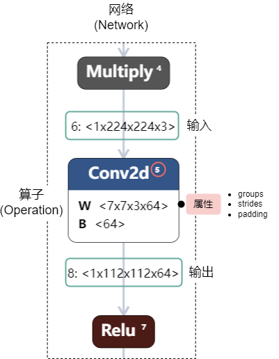
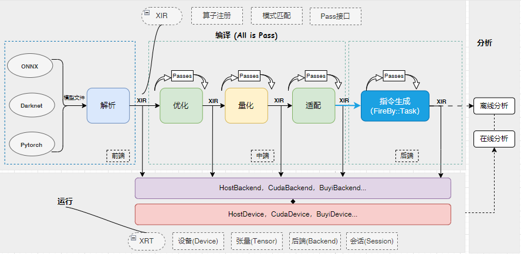
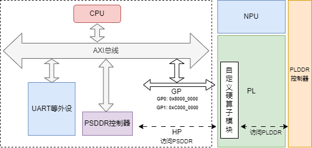

自定义算子#
一 算子的意义#
在Icraft XIR中，算子（Operation）是指表示计算或操作的最小单位。算子可以是任何一种计算，例如加法、乘法、卷积等。算子在XIR中被用来描述和表示计算图中的节点。
算子在XIR中有以下几个重要的属性：
ID（
op_id）：算子的ID用于标识和访问算子。输入（
inputs）：算子接收的输入数据，可以是其他算子的输出或者常量。输出（
outputs）：算子的计算结果，可以作为其他算子的输入。属性：算子的附加信息，用于描述算子的特定属性，例如卷积的卷积核大小、步长等。
算子在XIR中以一种统一的方式进行定义和操作，这使得进行计算图的转换和优化变得更加方便和灵活。
以Conv2d为例，其序列化后的算子表达如下所示：
1 "Conv2d": {
2 "op_id": 5, // 算子ID
3 "inputs": [...], // 算子输入
4 "outputs": [...], // 算子输出
5 "dilation_height": 1, # 算子属性：膨胀高度
6 "dilation_width": 1, # 算子属性：膨胀宽度
7 "groups": 1, # 算子属性：分组数量
8 "pad_bottom": 2, # 算子属性：下方填充
9 "pad_left": 3, # 算子属性：左方填充
10 "pad_right": 2, # 算子属性：右方填充
11 "pad_top": 3, # 算子属性：上方填充
12 "padding_mode": "ZEROS", # 算子属性：填充模式
13 "stride_height": 2, # 算子属性：滑动高度
14 "stride_width": 2 # 算子属性：滑动宽度
15 }
在XIR中，一个算子的输入是其他算子的输出，一个算子的输出同时作为其他算子的输入，算子之间通过输入与输出之间的连接关系构成了有向无环图（DAG）。该DAG使用网络(Network)来表示。
{kind=link}

如上图所示，一个网络了包含了算子以及算子之间的连接关系，网络中算子的排列顺序同时表示了其执行顺序，这就构成了一张计算图。
在XIR种，每一种算子表示了一种特定的计算过程，即输入到输出的映射关系。比如，Relu算子表示将输入中的每个小于0的数映射到0作为输出。同时，算子也是表示计算过程的最小单位，网络通过算子的排列组合和连接表达了更加复杂的计算过程。因此，如果一种计算过程无法使用现有的算子排列组合和连接来表达，那么可能需要添加新的算子。
二 算子的编译和运行#

上图展示了Icraft的整个编译过程。
首先，算子的定义在XIR中注册。
然后，在编译过程中，算子在前端（解析器）中被创建。
接着，算子在优化、量化和指令生成等过程中被一系列Pass进行转换，有可能被改变了属性（参数），有可能被删除、也有可能被替换为其他算子。
然而，由于Icraft需要支持任意(阶段)的网络在支持的计算资源上运行，因此，每个算子都需要实现在支持的计算资源上前向的逻辑。
因此，要实现一个算子的编译和运行过程，需要实现算子的解析(创建)、算子的优化、量化等一些列转换以及算子在不同后端上的前向实现。
三 自定义算子#
Icraft当前已经包含了丰富的算子库(详见 ops-reference)，可以满足大部分神经网络模型的编译需求。但在某些场景下， 可能需要用户自定义算子来实现特定的计算过程。如：
Icraft还未支持的算子，且无法通过其它算子组合实现
使用多个算子组合无法取得最佳计算性能，而自定义算子时通过自定义该算子在后端的实现可以提高性能
自定义算子功能允许用户自由地定义算子的输入输出和属性，以及在编译运行过程中的实现。比如，用户完成自定义算子的注册后，可以在前端解析中自定义框架算子到该算子的转换逻辑，可以在量化中自定义该算子的量化方式，还可以在各个后端中添加该算子的前向实现。
3.1 注册算子#
自定义算子的第一步是利用XIR的API来注册该算子。下面以 Eltwise 算子为例，说明如何注册该算子。
我们定义 Eltwise 算子可以对两个相同大小的输入张量 x 和 y 按元素乘以不同的系数 a 和 b ，然后在进行加或减的操作，得到一个同样大小的输出张量 z ，即 \(z = ax + by\)，其中 a 和 b 都是标量。因此，该算子有两个输入、一个输出，以及一些必要的属性如下：
op_mode: 操作模式，可选Add表示相加，Sub表示相减。a: 左操作数的系数。b: 右操作数的系数。
首先，新建一个C++工程，添加一个名为”eltwise.cpp”的文件，文件内容如下：
1 using namespace icraft::xir;
2
3 // 可以给一个自己喜欢的命名空间
4 namespace whatever {
5 enum class EltwiseMode {
6 Add,
7 Sub
8 }
9
10 class EltwiseNode : public OpNodeBase<EltwiseNode, OneResult> {
11 public:
12 EltwiseMode op_mode; // 按元素操作的模式
13 float a; // 左操作数的系数
14 float b; // 右操作数的系数
15
16 ICRAFT_DECLARE_ATTRS(EltwiseNode) {
17 ICRAFT_ATTR_FIELD(op_mode);
18 ICRAFT_ATTR_FIELD(a).set_default(1.0);
19 ICRAFT_ATTR_FIELD(b).set_default(1.0);
20 }
21 };
22
23 class Eltwise : public OpBase<Eltwise, EltwiseNode> {
24 public:
25 Eltwise() = default;
26
27 // 构造函数, 默认系数都为1
28 Eltwise(Value lhs, Value rhs, EltwiseMode op_mode, float a = 1.0, float b = 1.0) {
29 auto node = make_object<EltwiseNode>();
30 node->op_mode = op_mode;
31 node->a = a;
32 node->b = b;
33 data_ = std::move(node);
34 this->setInputs({ lhs, rhs });
35 };
36 };
37
38 // 注册算子，可以选择添加类型推断，也可以不添加
39 // 如果不添加，向网络中添加该算子前需要自己给出输出数据类型
40 ICRAFT_REGISTER_OP_NODE(EltwiseNode)
41 .set_tinfer<EltwiseNode, HostTarget>([](const auto* op) {
42 op->validate();
43 // 该算子输出的类型和输入相同
44 return Array<TensorType>{ op->inputs[0].tensorType() };
45 });
46 }
从上例可以看出，在XIR中，添加一个 Eltwise 算子需要定义 EltwiseNode 和 Eltwise 两个类：
其中
EltwiseNode类型派生自OpNodeBase, 表示该算子的容器类，即算子的属性真实存储在该类型中。用户需要在该类型中定义该算子的所有属性，属性的类型只可以为C++的POD类型，以及XIR中的ObjectRef类型及其子类；Eltwise类型派生自OpBase, 表示该算子的引用类，该类型实现了基于引用计数的内存管理，相当于算子的智能指针。
类型定义完成后，接着调用 ICRAFT_REGISTER_OP_NODE 宏来注册算子，该宏可以为被注册的算子添加一些反射机制，方便序列化等功能的实现。
在注册算子时，还可以调用 set_tinfer 方法为该算子添加类型推断，这样在构造算子时，只需要给定算子的输入(类型)，即可获取算子的输出(类型)。
用户注册自定义算子和Icraft XIR中注册内置的算子的方式是完全一致的，因此关于算子注册的详细信息，请参考《Icraft XIR 用户手册》的”算子”部分。
3.2 添加算子#
算子注册完成后，需要添加到网络中去。根据不同的使用场景，自定义算子可以以不同的方式添加到网络：
Icraft的解析组件无法完成对框架模型的解析，因为框架模型上的算子及算子组合（模式）无法映射到Icraft的内置算子。此时用户可以通过解析组件的自定义接口，将框架上的算子及组合解析到自定义算子上。
Icraft的解析组件能够将框架模型解析到Icraft的内置算子，但是某些内置算子及组合的实现无法满足性能指标。此时用户可以实现一些Pass，将内置算子及组合替换为自定义算子，并将这些Pass添加到优化组件的Pass调用列表。
下面分别描述两种添加自定义算子到网络的方式：
3.2.1 解析#
解析组件提供了自定义接口，允许用户自己实现框架上某些算子序列（模式）到自定义算子的映射。
下面以 Eltwise 算子为例，描述如何通过解析组件的自定义接口将算子添加到网络：
1auto parse_function = [](torch::jit::Module& module,
2 std::vector<torch::jit::Node*> node_pattern,
3 icraft::parser::Params& net_params, std::map<int, icraft::xir::Value>& value_map,
4 std::map<std::string, std::any>& const_map, int& outftmp_index) {
5 // 从node_pattern和value_map中获取算子输入的相关信息
6 auto add_node = node_pattern[0];
7 auto inputs = add_node->inputs();
8 auto input1_name = inputs[0]->debugName();
9 auto input1_id = std::any_cast<int>(net_params[input1_name]);
10 auto input1_value = value_map[input1_id];
11 auto input2_name = inputs[1]->debugName();
12 auto input2_id = std::any_cast<int>(net_params[input2_name]);
13 auto input2_value = value_map[input2_id];
14
15 // 构造自定义算子Eltwise
16 auto eltwise = whatever::Eltwise(input1_value, input2_value, whatever::EltwiseMode::Add);
17 auto ops = new std::vector<icraft::xir::Operation>();
18 ops->push_back(eltwise);
19 return ops;
20 };
21 //注册解析函数
22 ICRAFT_ADD_PATTERN_TO_PARSER("aten::add", "eltwise").set_parse(parse_function);
关于解析自定义的详细流程，请参考《Icraft 解析使用手册》。
3.2.2 优化#
Icraft中，优化主要负责对网络结构进行一系列转换，使得网络能够在目标平台上更加高效的运行。在转换中，算子可能会被添加、更改、删除和替换。
用户可以在优化阶段向网络中插入自定义算子，或者将网络中的一些算子替换成自定义算子。下面的示例展示了如何实现一个Pass，将网络中的Add算子替换为Eltwise。
1 // 示例Pass，将Add替换为Eltwise
2 static Pass ReplaceAddWitdhEltwise() {
3 auto pass_func = [](Network network, const PassContext& pass_ctx) {
4 // 创建模式，匹配Op
5 auto add_p = IsOp<Add>();
6
7 // 重写网络，将匹配到的Add替换为Eltwise
8 network.rewrite(add_p, [&](Network& network, const MatchGroup& result) {
9 // 获取匹配到的Op
10 auto add = result.at(add_p);
11
12 // 获取add算子的两个输入
13 auto lhs = add->inputs[0];
14 auto rhs = add->inputs[1];
15
16 // 创建Eltwise算子
17 auto eltwise = whatever::Eltwise(lhs, rhs, whatever::EltwiseMode::Add);
18
19 // 替换算子
20 network.replaceOpKeepUses(add, eltwise);
21 });
22 return network;
23 };
24
25 return NetworkPass(pass_func, PassInfo("whatever.ReplaceAddWitdhEltwise"));
26 }
27 // 注册Pass
28 ICRAFT_REGISTER_PASS("whatever.ReplaceReluWitdhFlatten").set_creator(ReplaceAddWitdhEltwise);
关于更详细的如何通过模式匹配来实现Pass，请参考《Icraft XIR 用户手册》。 关于如何在优化组件中调用该Pass，请参考《Icraft 优化用户手册》。
3.2.3 实现前向#
智能计算平台中的硬件平台是FPAI的架构，其包含CPU、GPU、NPU和PL等计算资源。不同的计算资源对应着不同的后端。如果自定义算子想要利用某个计算资源完成前向，那么需要向相应的后端注册前向函数。
目前，Icraft中主要有 HostBackend 和 BuyiBackend 两个后端：
HostBackend对应着CPU和GPU等计算资源，支持所有的内置算子；BuyiBackend对应着NPU和PL等计算资源， 只支持HardOp和Cast等利用NPU完成前向的算子。
备注
HardOp 和 Cast 也有 HostBackend 上的前向实现，但那是利用CPU来对NPU上的指令序列进行仿真。
一般情况下，即使自定义算子最终要在NPU或者PL完成前向，仍然建议注册 HostBackend 上的前向，该前向可以利用CPU模拟在NPU或者PL上的前向实现，以方便仿真。
以下示例展示了如何给 Eltwise 算子注册 HostBackend 上的前向实现：
1 // 算子在目标后端上的初始化操作
2 auto eltwise_init = [](const whatever::Eltwise& op, HostBackend backend) {
3 ... ...
4 };
5
6 // 算子在目标后端上的前向操作
7 auto eltwise_forward = [](const whatever::Eltwise& op, const std::vector<Tensor>& inputs, HostBackend backend) {
8
9 ... ...
10
11 // 返回表示前向结果的Tensor列表
12 auto output_tensors = ... ...;
13 return output_tensors;
14 }
15
16 // 注册初始化函数和前向函数到后端
17 ICRAFT_ADD_OP_TO_BACKEND(whatever::Eltwise, HostBackend)
18 .set_init(eltwise_init)
19 .set_forward(eltwise_forward);
如何给 Eltwise 算子注册 BuyiBackend 上的前向实现，请参考下文《自定义硬算子》。
四 软算子和硬算子#
一般情况下，我们称 只在CPU或GPU等计算资源上完成前向的算子称为软算子，而 需要利用NPU或PL等计算资源来完成前向的算子称为硬算子。软算子只需要在 HostBackend 上注册前向函数，而硬算子需要在 BuyiBackend 上注册前向函数，同时还需要在 HostBackend 注册前向函数以完成仿真。
4.1 自定义软算子#
自定义软算子的流程完全如第三节《自定义算子》的描述：
先根据需求注册算子
根据场景选择在解析或优化时将自定义算子添加到网络
将算子在CPU或GPU上的前向注册到
HostBackend
4.2 自定义硬算子#
Icraft允许用户利用PL的资源来完成自定义算子的前向以优化计算性能，此时的自定义算子称为自定义硬算子。当用户认为 仅使用CPU或GPU计算资源实现自定义算子的前向难以满足性能等技术指标时，可以利用PL的资源针对该算子设计专用的电路来加速计算过程，从而获得理想的性能。
4.2.1 系统架构#

FPAI的系统架构如上图所示，其中GP和HP是处理器系统和PL系统交互的接口。GP口是处理器系统中总线的从设备接口，CPU可以通过GP口读写PL上的电路模块；HP口是访问PSDDR控制器的从设备接口，PL上的电路模块可以作为主设备通过该接口访问PS上的DDR；同时，PL上的电路模块也可以访问PLDDR。
自定义硬算子的本质是在PL上实现一个专用的电路模块来加速算子前向，该模块可以通过GP口将一些控制寄存器挂载到处理器系统的总线上，从而可以通过CPU来访问控制；如有需要，该模块还可以通过HP口读写PSDDR，实现与处理器系统的数据交互；同时，该模块还可以访问PLDDR，实现与NPU的数据交互。
实际上，处理器系统对NPU的控制也是通过GP口来实现的。因此在GP1和GP2的地址空间中，已经有一部分被占用了。目前的占用情况如下：
GP0:
GP0接口的地址空间范围为 0x4000_0000 ~ 0x7FFF_FFFF，当前已经占用的范围如下：
分支 |
基地址 |
用途 |
|---|---|---|
host_ctrl_upper |
0x4000_0000 |
调整NPU工作时钟 |
host_ctrl_lower |
0x4002_0000 |
NPU软核的一些状态寄存器 |
ai_ra |
0x4004_0000 |
NPU硬核的一些状态寄存器 |
自定义算子可以使用 0x4008_0000 ~ 0x7FFF_FFFF 范围的地址空间。
GP1:
GP1接口的地址空间范围为 0x8000_0000 ~ 0xBFFF_FFFF，当前已经占用的范围如下：
分支 |
基地址 |
用途 |
|---|---|---|
cdma_ctrl |
0x8000_0000 |
CDMA相关寄存器 |
image_make |
0x8000_0400 |
ImageMake相关寄存器 |
icore_post |
0x8000_0800 |
IcorePostx相关寄存器 |
cache |
0x8000_0C00 |
Cache相关寄存器 |
自定义算子可以使用 0x800C_0000 ~ 0xBFFF_FFFF 范围的地址空间。
备注
NPU和DMA在GP0和GP1上挂载的地址不是绝对的，但是占用的空间是确定的。
如右图所示，用户在设计硬件系统时可以将NPU和CDMA分别挂载到GP0或GP1的任意位置，NPU占用从起始位置开始的512KB的地址空间，CDMA以及其他模块占用起始位置开始的768K的地址空间。
4.2.2 硬件流程#
请参考《自定义硬算子FPGA设计流程》。
4.2.3 软件流程#
自定义硬算子的软件流程包含上文中自定义算子的流程，除此之外，自定义硬算子要根据加速模块的硬件实现来完成量化、排布和 BuyiBackend 上的前向接口。
1. 量化#
量化组件在对网络进行量化时会遍历每一个算子，求取该算子的输入输出以及参数的量化缩放因子等量化参数。
如果在量化时，网络中包含自定义算子，即自定义算子要参与网络的量化，那么需要为该自定义算子实现量化接口。
量化组件提供了 BuyiNormratio , BuyiNormalize 和 BuyiQuantize 三个接口来完成算子的量化过程。我们仍以 Eltwise 算子为例，为其实现量化接口如下：
1 // 实现接口BuyiNormratio，确定该算子输入输出的归一化系数
2 ICRAFT_IMPL_FUNCTOR(BuyiNormratio)<whatever::Eltwise> (
3 [](const auto& op, icraft::qt::QuantizerLogger& logger){
4 ... ...
5 });
6
7 // 实现接口BuyiNormalize，对该算子的参数进行归一化
8 ICRAFT_IMPL_FUNCTOR(BuyiNormalize)<whatever::Eltwise> (
9 [](const auto& op, icraft::qt::QuantizerLogger& logger){
10 ... ...
11 });
12
13 // 实现接口BuyiQuantize，对该算子的参数进行量化
14 ICRAFT_IMPL_FUNCTOR(BuyiQuantize)<whatever::Eltwise> (
15 [](const auto& op, icraft::qt::QuantizerLogger& logger){
16 ... ...
17 });
如何具体地实现以上三个接口，请参考《Icraft量化用户手册》。
2. 排布#
在智能计算平台中，不同的NPU对数据的排布方式都有特定的要求。因此， 当自定义算子的输入为NPU的输出或自定义算子的输出给NPU作为输入时，需要格外注意数据排布的匹配。
当自定义算子的输入为NPU的输出时，由于NPU的输出以特定的格式排布，因此实现自定义算子的前向时需要针对该排布格式进行设计。
当自定义算子的输出给NPU作为输入时，在实现自定算子的前向时，要将结果以NPU需要的格式进行保存。除此之外，还需要将算子输出的
TensorType的描述，比如shape和layout等，设置成和其排布相匹配的值。
针对布衣架构，Icraft适配组件中提供了 ByLayout 接口来更改算子输出的描述。以 Eltwise 算子为例，实现该接口的方式如下：
1 ICRAFT_IMPL_FUNCTOR(BYLayout)<whatever::Eltwise> ([](auto& op, auto& logger) {
2 // 将Op转换为Eltwise
3 auto eltwise = op.cast<whatever::Eltwise>();
4 // 获取其输出TensorType
5 auto ofm_dtype = eltwise->outputs[0].tensorType();
6
7 ... ...
8
9 // 设置合适的shape和layout
10 ofm_dtype.setShape(...);
11 ofm_dtype.setLayout(...);
12 ops.push_back(eltwise);
13 return ops;
14 });
关于布衣架构的NPU的数据排布要求，请参考:
3. 前向#
自定义硬算子需要把算子利用PL上的加速模块的前向过程注册到 BuyiBackend 上，这是因为硬算子需要 BuyiDevice 来读写加速模块的寄存器，控制加速模块完成算子前向。
以下示例展示了如何给 Eltwise 算子注册 BuyiBackend 上的前向实现：
1 // 算子在目标后端上的初始化操作
2 auto eltwise_init = [](const whatever::Eltwise& op, BuyiBackend backend) {
3 // 获取BuyiBackend绑定的BuyiDevice
4 auto buyi_device = backend->device.cast<BuyiDevice>();
5
6 // 利用BuyiDevice配置一些初始化寄存器
7 buyi_device.writeReg(0x800C_0000, 1);
8
9 // 可能还有一些其他初始化操作
10 ... ...
11 };
12
13 // 算子在目标后端上的前向操作
14 auto eltwise_forward = [](const whatever::Eltwise& op, const std::vector<Tensor>& inputs, BuyiBackend backend) {
15 // 获取两个输入Tensor
16 auto lhs = inputs[0];
17 auto rhs = inputs[1];
18
19 // 获取算子的操作模式
20 auto op_mode = op->op_mode;
21
22 // 获取两个输入的起始地址
23 auto lhs_addr = lhs.data().addr();
24 auto rhs_addr = rhs.data().addr();
25
26 // 获取输出地址和大小
27 auto output = op->outputs[0];
28 auto output_dtype = output.tensorType();
29 auto output_addr = output->mtype.cast<ExternalMem>()->addr;
30 auto output_bytes = output_dtype.bytes();
31
32 // 配置操作模式寄存器，假设0代表Add, 1代表Sub
33 buyi_device.writeReg(0x800C0004, static_cast<int>(op_mode));
34
35 // 配置两个输入地址
36 buyi_device.writeReg(0x800C0008, lhs_addr);
37 buyi_device.writeReg(0x800C000C, hs_addr);
38
39 // 配置输出地址
40 buyi_device.writeReg(0x800C0010, output_addr);
41
42 // 启动计算
43 buyi_device.writeReg(0x800C0014, 1);
44
45 // 不断查询状态寄存器，确认是否完成计算
46 auto done = utils::WaitUntil([](){return buyi_device.readReg(0x800C0018) == 1;}, 1000ms);
47
48 // 如果在1000ms内完成计算，则构造输出Tensor返回，否则抛出异常
49 if(done){
50 auto mem_chunk = device.defaultMemRegion().malloc(MemPtr(output_addr), output_bytes);
51 auto ouput_tensor = Tensor(output_dtype, mem_chunk);
52 return { ouput_tensor };
53 } else{
54 throw ...
55 }
56 }
57
58 // 注册初始化函数和前向函数到后端
59 ICRAFT_ADD_OP_TO_BACKEND(whatever::Eltwise, BuyiBackend)
60 .set_init(eltwise_init)
61 .set_forward(eltwise_forward);
关于 BuyiDevice 的详细用法，请参考《Icraft XRT使用手册》。
四 自定义激活#
在Icraft中， 如果一个算子只有一个输入和输出，而且输入和输出张量的元素是一一映射的关系，我们称这个算子为激活算子，如Sigmoid、Tanh等算子。
在NPU中，激活算子可以使用查找表来实现，查找表会在指令生成中生成。如果 用户的自定义算子是一个激活算子，也可以选择使用NPU中的查找表来实现前向，该过程称为自定义激活。
自定义激活的流程和自定义软算子完全相同，只不过需要在定义算子时添加 IsActivate 的特质。
假设用户想自定义一个激活算子，名为 CustomActivate ，其注册的方式如下：
1 using namespace icraft::xir;
2
3 // 可以给一个自己喜欢的命名空间
4 namespace whatever {
5 // 注意在OpNodeBase的模板参数中添加 IsActivate 的特质
6 class CustomActivateNode : public OpNodeBase<CustomActivateNode, IsActivate> {
7 };
8
9 class CustomActivate : public OpBase<CustomActivate, CustomActivateNode> {
10 public:
11 CustomActivate() = default;
12
13 // 构造函数
14 CustomActivate(Value input) {
15 auto node = make_object<CustomActivateNode>();
16 data_ = std::move(node);
17 this->addInput(input);
18 };
19 };
20
21 // 注册算子，可以选择添加类型推断，也可以不添加
22 // 如果不添加，向网络中添加该算子前需要自己给出输出数据类型
23 ICRAFT_REGISTER_OP_NODE(CustomActivateNode)
24 .set_tinfer<CustomActivateNode, HostTarget>([](const auto* op) {
25 op->validate();
26 // 该算子输出的类型和输入相同
27 return Array<TensorType>{ op->inputs[0].tensorType() };
28 });
29 }